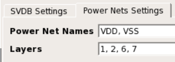
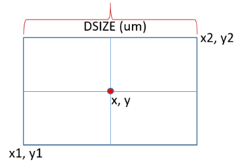
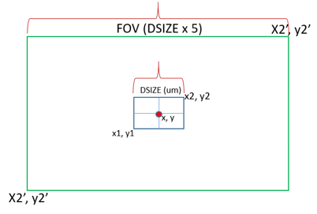
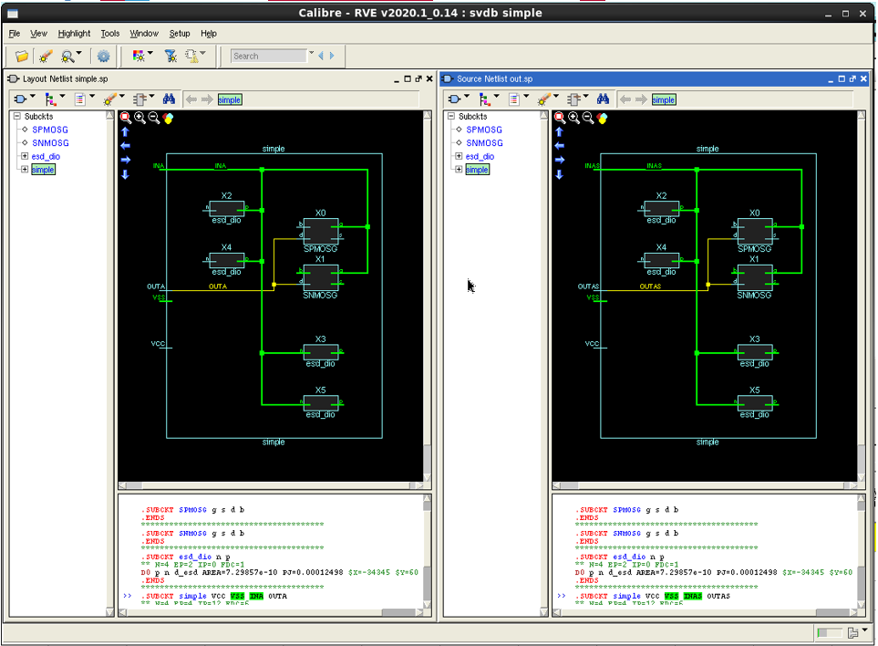
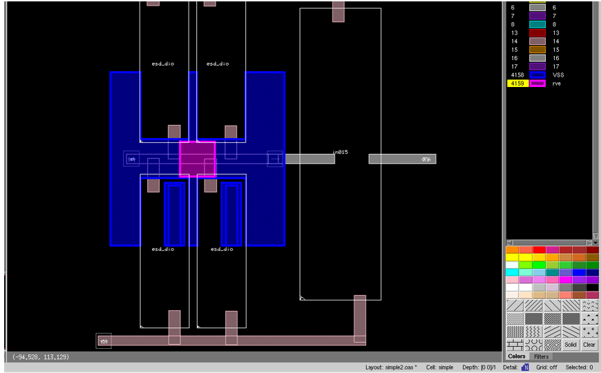

You can use Calibre
DefectReview to cross-probe a wafer defect to schematic nets in
a schematic viewer, allowing you to locate nets impacted by the
defect. Similarly, defects can be cross-probed to schematic and
layout viewers for the DC Fail Analysis (highlighting power nets in
schematic and layout viewers).
Prerequisites
The following
environment variables must be set:
Set NXDAT_MGC_HOME
to the path of the Calibre DefectReview installation.
Set MGC_HOME
to the path of the Calibre installation.
Add MGC_HOME/bin to
the PATH environment variable.
Launch the
Wafer Defect Management tool.
Open a wafer
defect file in the Calibre DefectReview window.
Have valid licenses for Caliber DESIGNrev,
Calibre LVS, and Calibre RVE.
Procedure
- Before
cross-probing, you must first generate an LVS SVDB directory from
a Calibre LVS run and load it through the Schematic SVDB Setup dialog
box. To open the Schematic SVDB Setup window, click the button
or select Utilities > Schematic Nets
Extractor.
- The following are the methods used to generate
an SVDB directory from a Calibre LVS run:
If you are cross-probing power nets, you must
also enter information in the Power Nets Settings tab
for either LVS Run or SVDB settings. These options are
used to highlight power nets affected by defects in a layout viewer.
Figure 3. Power Nets Settings
Table 3. Power Nets Settings TabInput
|
Description
|
|---|
Power Net Names
|
An optional parameter
that lists power net names separated by a comma. If a defect affects
one or more specified power nets, the affected power nets are highlighted
in the schematic and layout viewer. This is used only for power
net highlighting and is not required for cross-probing nets to schematics.
|
Layers
|
An optional parameter
that specifies layers used to retrieve net names. By default, all
the layers from layout are considered. This is used only for power
net highlighting and is not required for cross-probing nets to schematics.
|
Click Submit to start
a Calibre LVS run. At the end of successful run, an SVDB directory
is generated in the Output Directory specified. If a failure occurs,
you can check the log and error files generated in the Output Directory.
- Additionally, use the following controls to
save, close, and load dialog box settings:
Save
Params — Saves the current settings of the Schematic
SVDB Setup dialog box in an XML.
Load
Params — Loads a pre-existing XML file containing Schematic
SVDB Setup settings.
Auto
Close — Automatically closes the Schematic SVDB Setup
dialog box when the run completes successfully. If there is any
error in execution or if the process is terminated, the dialog box
remains.
- To cross-probe defects in Calibre RVE and Calibre
DESIGNrev:
To cross-probe a defect listed in Calibre DefectReview
to schematic nets in a schematic and layout viewer, in the Defect
List, select a defect, right-click on its row header, and select Highlight
Nets in Schematic.
If the SVDB was not previously set up, the SVDB
Setup dialog box appears. Specify the required inputs in the SVDB Settings tab (as listed in Figure 2) and click Submit.
To highlight power nets in the schematic and layout
viewers, select a defect and right-click in the Defect List’s row
header and select Highlight Power Nets.
If the SVDB was not previously set up, the SVDB
Setup dialog box appears. Specify the required inputs in the SVDB Settings and Power Nets Settings tabs (as listed
in Figure 2 and Figure 3) and click Submit.
To retrieve names of nets affected by a defect,
the defect region is used instead of just defect location. The defect
region is specified using defect’s DSIZE as follows:
Figure 4. Specifying Defect Region Using DSIZE
x1 = x – (DSIZE / 2), y1 = y – (DSIZE / 2)
x2 = x + (DSIZE / 2), y2 = y + (DSIZE / 2)
Where (x, y) is the defect location. The minimum
defect region window size is 1x1 micron.
To highlight nets or power nets in schematic and
layout viewers, the defect region is specified in same way as when
retrieving net names. The Field of View (FOV) region to zoom in
on in a layout viewer is set to five times greater than DSIZE. The
minimum FOV region is 10x10 microns. In the layout viewer, highlighted
nets are clipped to the FOV size.
Figure 5. FOV Region and DSIZE
Results
The following figures show an example of cross-probing
nets affected by a defect in Calibre RVE and Calibre DESIGNrev.
Figure 6. Cross-Probe Defect-affected Nets in Calibre RVE
Figure 7. Cross-Probe Defect-affected Nets in Calibre DESIGNrev